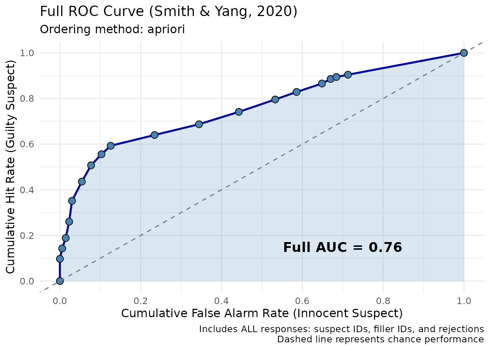
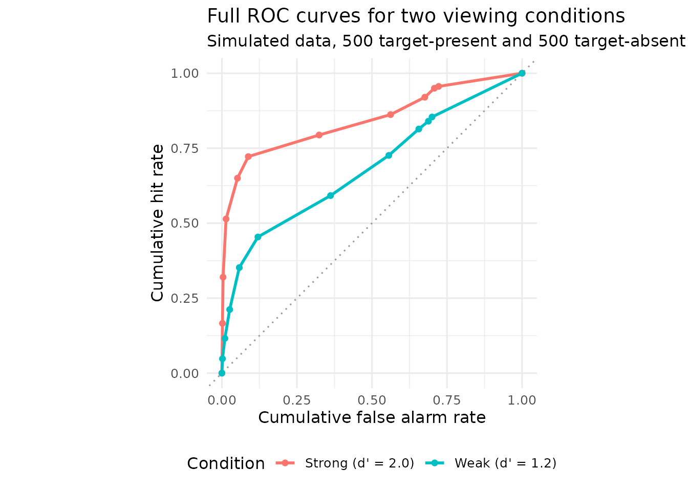

Full ROC Analysis for Eyewitness Lineups
Colin G. Tredoux
Tamsyn M. Naylor
2026-10-30
Source:vignettes/fullroc_analysis.Rmd
fullroc_analysis.RmdAcknowledgement. Large language models supplied by Anthropic and OpenAI were used in preparing this vignette, to assist with checking code, testing the veracity of the approaches described, and on occasion editing the text. Responsibility for the content rests with the authors.
Introduction
This vignette demonstrates full ROC curves for eyewitness lineup data, following the method of Smith, Yang and Wells (2020).
Attribution. The method is theirs, and a reference implementation exists as the R package fullROC (Yang & Smith). The implementation here was written from the published description and adapted into this package’s data conventions; it is not a fork of that package.
Every response, not just suspect identifications
Conventional ROC analysis of lineup data uses only suspect identifications. A witness who picks a foil, and a witness who rejects the lineup entirely, contribute nothing to either axis.
Spelling out what actually happens when a witness views a lineup makes the omission clear. There are six possible outcomes:
| Witness response | Target-present lineup | Target-absent lineup |
|---|---|---|
| Picks the suspect | Correct identification — used by both methods | False identification — used by both methods |
| Picks a foil | Filler identification — an error, discarded by partial ROC | Filler identification — a protected outcome, discarded by partial ROC |
| Picks nobody | Incorrect rejection — a miss, discarded by partial ROC | Correct rejection — discarded by partial ROC |
Four of the six outcomes are set aside. Yet they carry information. A witness who picks a foil has demonstrably failed to recognise the culprit, and in a target-absent lineup has done the innocent suspect a service. A confident rejection is evidence against the suspect’s guilt, and an investigator would certainly treat it as such.
The full ROC method uses all six.
Why the partial ROC curve does not span the full range
This is worth being concrete about, because it is the practical reason full ROC was proposed.
An ROC curve is traced by progressively relaxing the criterion for accepting evidence. In conventional lineup ROC analysis, the only lever is confidence among suspect identifications: start with the highest-confidence suspect IDs and work down. When every suspect identification has been included, the curve stops.
It stops at the point given by the overall suspect identification rates in the two arms — typically well under 0.3 on the x-axis, because most witnesses in a target-absent lineup do not pick the innocent suspect; they pick a foil or reject. There is no way to continue the curve, because there are no further suspect identifications to admit.
data(lineup_example)
partial <- make_roc(lineup_example, lineup_size = 6, show_plot = FALSE)
full <- make_fullroc(lineup_example, lineup_size = 6, show_plot = FALSE)
knitr::kable(
data.frame(
Method = c("Partial ROC (suspect IDs only)", "Full ROC (all responses)"),
`False-ID axis spans` = c(
sprintf("0 to %.3f", max(partial$roc_data$false_id_rate)),
sprintf("0 to %.3f", max(full$roc_data$cumulative_false_alarm_rate))
),
`Area reported` = c(
sprintf("pAUC = %.4f", partial$pauc),
sprintf("AUC = %.4f", full$auc)
),
check.names = FALSE
),
row.names = FALSE,
caption = "Range covered by the two methods, lineup_example (700 target-present and 700 target-absent lineups of size 6)."
)| Method | False-ID axis spans | Area reported |
|---|---|---|
| Partial ROC (suspect IDs only) | 0 to 0.126 | pAUC = 0.0533 |
| Full ROC (all responses) | 0 to 1.000 | AUC = 0.7775 |
The full ROC reaches 1.0 because once foil identifications and rejections are admitted as evidence, every witness eventually contributes, and the cumulative rates must reach 1 in both arms.
The two areas are not comparable. A pAUC of 0.06 and an AUC of 0.78 are not in competition; they are computed over different ranges from different subsets of the data. Never report one as though it were the other.
The key insight: two signal detection tasks
Smith et al. (2020) argue that a lineup involves two signal detection problems, and that the conventional analysis conflates them.
The eyewitness task. The witness must decide whether the culprit is present and, if so, which member they are. Three responses, two states of the world. This is a question about memory.
The investigator task. The investigator must decide whether to proceed against the suspect. Two decisions, two states. Crucially, the investigator knows which lineup members are foils — so a foil identification is not an ambiguous outcome to them, it is informative evidence that the witness could not recognise the culprit.
The full ROC measures investigator discriminability: how well someone using the witness’s response as evidence can separate guilty from innocent suspects. That is a different quantity from eyewitness discriminability, and it is arguably the one that matters for policy, since it is the investigator who acts.
This is also the source of the main objection to the method — that an AUC near 0.8 may describe the investigator’s inferential position rather than the witness’s memory, and readers may conflate the two. Keeping the label “investigator discriminability” attached to the number is the simplest guard.
Basic usage
Data structure
Three columns are required: target_present,
identification and confidence.
lineup_example has them, along with the member-level
columns this package records.
str(lineup_example)
#> 'data.frame': 1400 obs. of 5 variables:
#> $ target_present: logi FALSE FALSE TRUE TRUE TRUE FALSE ...
#> $ lineup_member : int 2 3 2 1 1 0 1 1 1 4 ...
#> $ suspect_pos : int 1 1 1 1 1 1 1 1 1 1 ...
#> $ identification: chr "filler" "filler" "filler" "suspect" ...
#> $ confidence : num 40 50 40 80 60 20 60 70 20 50 ...As elsewhere in this package, the data are simulated at the level of
individual foils — each foil has its own mean memory
strength, so the foils are not interchangeable — and
identification is derived from lineup_member
rather than stored in its place. See ?simulate_lineup_data
and its foil_bias argument.
Compute a full ROC
result <- make_fullroc(
lineup_example,
lineup_size = 6,
order = "apriori",
show_plot = FALSE
)
print(result)
#>
#> === Full Lineup ROC Analysis (Smith & Yang, 2020) ===
#>
#> Full AUC: 0.76
#> Target-present trials (N): 700
#> Target-absent trials (N): 700
#> Lineup size: 6
#> Ordering method: apriori
#> Operating points: 19
#>
#> ROC Data (first 10 points):
#> cumulative_hit_rate cumulative_false_alarm_rate evidence_label
#> 1 0.00000000 0.000000000 origin
#> 2 0.09714286 0.000000000 suspect_100
#> 3 0.14285714 0.005714286 suspect_90
#> 4 0.18857143 0.014285714 suspect_80
#> 5 0.26000000 0.022857143 suspect_70
#> 6 0.35142857 0.030000000 suspect_60
#> 7 0.43571429 0.054285714 suspect_50
#> 8 0.50714286 0.077142857 suspect_40
#> 9 0.55571429 0.102857143 suspect_30
#> 10 0.59285714 0.125714286 suspect_20
#>
#>
#> Diagnosticity Table (ordered by evidence strength):
#> evidence_label hit_rate false_alarm_rate diagnosticity_ratio
#> suspect_100 0.097142857 0.000000000 97.1428571
#> suspect_90 0.045714286 0.005714286 8.0000000
#> suspect_80 0.045714286 0.008571429 5.3333333
#> suspect_70 0.071428571 0.008571429 8.3333333
#> suspect_60 0.091428571 0.007142857 12.8000000
#> suspect_50 0.084285714 0.024285714 3.4705882
#> suspect_40 0.071428571 0.022857143 3.1250000
#> suspect_30 0.048571429 0.025714286 1.8888889
#> suspect_20 0.037142857 0.022857143 1.6250000
#> filler_20 0.047142857 0.108571429 0.4342105
#> filler_30 0.047142857 0.110000000 0.4285714
#> filler_40 0.054285714 0.098571429 0.5507246
#> filler_50 0.054285714 0.090000000 0.6031746
#> filler_60 0.032857143 0.052857143 0.6216216
#> filler_70 0.037142857 0.062857143 0.5909091
#> filler_80 0.020000000 0.021428571 0.9333333
#> filler_90 0.008571429 0.014285714 0.6000000
#> filler_100 0.010000000 0.028571429 0.3500000
#> reject_20 0.095714286 0.287142857 0.3333333
#>
#> Plot: use plot(x), or save the object and extract x$plot
result$plot + theme_minimal(base_size = 12)
The curve runs corner to corner, and each point is one operating point: a threshold on the ordered evidence categories.
Ordering methods, and a warning about the default
Building the curve requires the response categories — every combination of decision and confidence level — to be placed in order from “strongest evidence of guilt” to “strongest evidence of innocence”. The two available orderings differ in where that order comes from, and the difference matters a great deal more than it might appear.
A-priori ordering
order = "apriori" fixes the order in advance on
theoretical grounds:
- Suspect identifications, from high confidence down to low
- Filler identifications, from low confidence up to high
- Rejections, from low confidence up to high
The reasoning is that a confident suspect identification is the strongest evidence of guilt, while a confident rejection or a confident filler identification is the strongest evidence of innocence.
Diagnosticity ordering
order = "diagnosticity" instead sorts the categories by
their observed diagnosticity ratio,
,
computed from the data at hand.
That sounds more principled — why assume an order when you can measure it? — but it uses the same data twice: once to choose the ordering that makes the curve bow as far upward as possible, and again to compute the area under it. The result is optimistically biased.
How large is the bias?
Large enough to matter. The following simulates data with no signal whatsoever — the response distribution is identical in target-present and target-absent lineups, so the true AUC is exactly 0.5 — and computes the AUC both ways.
null_auc <- function(n_per_arm, n_reps = 15, seed = 7) {
set.seed(seed)
out <- t(vapply(seq_len(n_reps), function(i) {
d <- data.frame(
target_present = rep(c(TRUE, FALSE), each = n_per_arm),
identification = sample(c("suspect", "filler", "reject"),
2 * n_per_arm, replace = TRUE,
prob = c(0.2, 0.3, 0.5)),
confidence = sample(seq(20, 100, 20), 2 * n_per_arm, replace = TRUE)
)
c(diagnosticity = make_fullroc(d, lineup_size = 6,
show_plot = FALSE)$auc,
apriori = make_fullroc(d, lineup_size = 6, order = "apriori",
show_plot = FALSE)$auc)
}, numeric(2)))
colMeans(out)
}
bias_table <- do.call(rbind, lapply(c(100, 200, 500, 1000), function(n) {
a <- null_auc(n)
data.frame(`Lineups per arm` = n,
`Diagnosticity ordering` = round(a[["diagnosticity"]], 3),
`A-priori ordering` = round(a[["apriori"]], 3),
check.names = FALSE)
}))
knitr::kable(
bias_table, row.names = FALSE,
caption = "Mean AUC from data containing NO signal at all, so the true AUC is 0.500. Simulated, 15 replications per row, 15 decision-by-confidence categories."
)| Lineups per arm | Diagnosticity ordering | A-priori ordering |
|---|---|---|
| 100 | 0.655 | 0.482 |
| 200 | 0.601 | 0.490 |
| 500 | 0.568 | 0.494 |
| 1000 | 0.544 | 0.496 |
With 100 lineups per arm — an entirely ordinary study size — pure noise returns an AUC around 0.65 under diagnosticity ordering. On the interpretive scale often quoted for AUC, that is “weak to moderate discriminability”. It is nothing of the kind: there is no signal in these data at all.
A-priori ordering sits at 0.5 throughout, as it should.
The bias shrinks as the sample grows, roughly with the square root, but it is still around 0.05 at 1000 lineups per arm. It also grows with the number of decision-by-confidence categories, so binning confidence reduces it.
Recommendation. Use order = "apriori"
for anything inferential: hypothesis tests, comparisons between
conditions, published estimates. Diagnosticity ordering is defensible
only as an exploratory upper bound, and should be labelled as such.
make_fullroc() emits a message when diagnosticity ordering
is used on a modest sample, for this reason.
Binning confidence
Binning reduces the number of operating points, which produces a cleaner curve and — as noted above — a smaller optimism bias when diagnosticity ordering is used.
binned <- make_fullroc(
lineup_example,
conf_bins = c(0, 60, 80, 100),
order = "apriori",
lineup_size = 6,
show_plot = FALSE
)
knitr::kable(
data.frame(
Version = c("All confidence levels", "Three bins (0-60, 60-80, 80-100)"),
`Operating points` = c(nrow(result$roc_data), nrow(binned$roc_data)),
AUC = round(c(result$auc, binned$auc), 4),
check.names = FALSE
),
row.names = FALSE,
caption = "Effect of binning confidence, lineup_example, a-priori ordering."
)| Version | Operating points | AUC |
|---|---|---|
| All confidence levels | 20 | 0.7596 |
| Three bins (0-60, 60-80, 80-100) | 8 | 0.7599 |
The AUCs are close, which is the reassuring case. A large discrepancy would suggest the curve is being driven by sparse categories.
Understanding the output
The diagnosticity table
Non-cumulative rates for each decision-by-confidence category:
knitr::kable(
head(as.data.frame(result$diagnosticity_table)[
, c("decision", "conf_bin", "hit_rate", "false_alarm_rate",
"diagnosticity_ratio")], 8),
digits = 4, row.names = FALSE,
caption = "Non-cumulative response rates and diagnosticity ratios, lineup_example (first 8 categories under a-priori ordering)."
)| decision | conf_bin | hit_rate | false_alarm_rate | diagnosticity_ratio |
|---|---|---|---|---|
| suspect | 100 | 0.0971 | 0.0000 | 97.1429 |
| suspect | 90 | 0.0457 | 0.0057 | 8.0000 |
| suspect | 80 | 0.0457 | 0.0086 | 5.3333 |
| suspect | 70 | 0.0714 | 0.0086 | 8.3333 |
| suspect | 60 | 0.0914 | 0.0071 | 12.8000 |
| suspect | 50 | 0.0843 | 0.0243 | 3.4706 |
| suspect | 40 | 0.0714 | 0.0229 | 3.1250 |
| suspect | 30 | 0.0486 | 0.0257 | 1.8889 |
A ratio well above 1 means the response is more common when the suspect is guilty; well below 1, more common when innocent; near 1, uninformative.
The ROC data
knitr::kable(
head(as.data.frame(result$roc_data), 6),
digits = 4, row.names = FALSE,
caption = "Cumulative rates defining the ROC operating points, lineup_example."
)| cumulative_hit_rate | cumulative_false_alarm_rate | evidence_label |
|---|---|---|
| 0.0000 | 0.0000 | origin |
| 0.0971 | 0.0000 | suspect_100 |
| 0.1429 | 0.0057 | suspect_90 |
| 0.1886 | 0.0143 | suspect_80 |
| 0.2600 | 0.0229 | suspect_70 |
| 0.3514 | 0.0300 | suspect_60 |
Interpreting the AUC
The AUC has a direct probabilistic reading: it is the probability that a randomly chosen guilty suspect receives stronger evidence than a randomly chosen innocent one. 0.5 is chance.
Descriptive labels — “0.7 is moderate”, “0.8 is good” — circulate widely, but they should be resisted here for two reasons. The bias demonstrated above means a number in the 0.6s may reflect no signal at all; and the quantity is investigator discriminability, which has no established interpretive convention in this literature. Report the value, the ordering method, the sample sizes, and let the comparison do the work.
Comparing procedures
The most defensible comparison is curve dominance: if one procedure’s ROC lies above another’s across the whole range, it is superior at every operating point, whatever base rate or cost structure is assumed.
strong <- as.data.frame(simulate_lineup_data(
n_tp = 500, n_ta = 500, d_prime = 2.0, c_criterion = 0.9,
lineup_size = 6, conf_levels = 5,
foil_bias = c(0.4, 0.2, 0.0, -0.4, -1.0), seed = 11
))
weak <- as.data.frame(simulate_lineup_data(
n_tp = 500, n_ta = 500, d_prime = 1.2, c_criterion = 0.9,
lineup_size = 6, conf_levels = 5,
foil_bias = c(0.4, 0.2, 0.0, -0.4, -1.0), seed = 12
))
strong_roc <- make_fullroc(strong, lineup_size = 6, order = "apriori",
show_plot = FALSE)
weak_roc <- make_fullroc(weak, lineup_size = 6, order = "apriori",
show_plot = FALSE)
knitr::kable(
data.frame(
Condition = c("Strong memory (d' = 2.0)", "Weak memory (d' = 1.2)"),
AUC = round(c(strong_roc$auc, weak_roc$auc), 4)
),
row.names = FALSE,
caption = "Full ROC AUC by viewing condition, simulated data (500 target-present and 500 target-absent lineups per condition, a-priori ordering)."
)| Condition | AUC |
|---|---|
| Strong memory (d’ = 2.0) | 0.8443 |
| Weak memory (d’ = 1.2) | 0.6835 |
curves <- rbind(
transform(as.data.frame(strong_roc$roc_data), Condition = "Strong (d' = 2.0)"),
transform(as.data.frame(weak_roc$roc_data), Condition = "Weak (d' = 1.2)")
)
ggplot(curves, aes(x = cumulative_false_alarm_rate, y = cumulative_hit_rate,
colour = Condition)) +
geom_abline(slope = 1, intercept = 0, linetype = "dotted", colour = "grey60") +
geom_line(linewidth = 1) +
geom_point(size = 1.6) +
coord_equal() +
labs(
x = "Cumulative false alarm rate",
y = "Cumulative hit rate",
title = "Full ROC curves for two viewing conditions",
subtitle = "Simulated data, 500 target-present and 500 target-absent lineups per condition"
) +
theme_minimal(base_size = 12) +
theme(legend.position = "bottom")
Here the stronger condition dominates: its curve is above the weaker one throughout, so no assumption about base rates or costs could reverse the conclusion.
When curves cross, there is no procedure-level
winner, and the choice depends on where you intend to operate. That
requires a base rate and a cost structure — which is expected utility
analysis, covered in
vignette("calibration_decision_analysis").
Note that this package provides no significance test for a difference between two full-ROC AUCs. The comparison above is descriptive.
Technical Details
How the curve is built
For each decision-by-confidence category (three decisions times the number of confidence levels), the non-cumulative rates are
and the diagnosticity ratio is .
Categories are then placed in order — by descending, or by the a-priori scheme — and accumulated:
Because every response falls in exactly one category, both cumulative sums reach 1 when all categories are included, which is why the curve spans the full range. The area follows by the trapezoidal rule:
Edge cases
-
:
the ratio is undefined, so a small constant (
epsilon, default 0.001) is substituted. The affected category sorts to the top under diagnosticity ordering, which is one route by which that ordering becomes optimistic. - : the category is empty and is removed.
- Empty bins after
conf_binsare applied are removed.
Assumptions
- Target-present and target-absent lineups are independent samples.
- Every witness contributes exactly one response, so the categories partition the sample. If witnesses saw multiple lineups this is violated.
- Under diagnosticity ordering, the AUC is not an unbiased estimate; see the demonstration above.
- The quantity estimated is investigator discriminability, not eyewitness discriminability.
No standard errors
make_fullroc() returns a point estimate only. There is
no bootstrap interval for the full-ROC AUC in this package, and the
optimism of diagnosticity ordering would not be repaired by one — a
naive bootstrap that re-selects the ordering within each resample
reproduces the bias rather than revealing it. For interval estimates,
use a-priori ordering and bootstrap the AUC with the ordering held
fixed.
Summary
- Partial ROC uses one of six possible witness outcomes on each side; full ROC uses all of them, which is why it spans the entire range.
- pAUC and full AUC are not comparable numbers.
- Full ROC measures investigator discriminability, not eyewitness memory.
-
order = "diagnosticity"is optimistically biased — around +0.15 at 100 lineups per arm, and still +0.05 at 1000. Useorder = "apriori"for anything inferential. - Prefer curve dominance to a difference in AUC when comparing procedures.
References
Lampinen, J. M., Smith, A. M., & Wells, G. L. (2019). Four utilities in eyewitness identification practice: Dissociations between receiver operating characteristic (ROC) analysis and expected utility analysis. Law and Human Behavior, 43(1), 26-44.
National Research Council. (2014). Identifying the culprit: Assessing eyewitness identification. Washington, DC: The National Academies Press.
Smith, A. M., Yang, Y., & Wells, G. L. (2020). Distinguishing between investigator discriminability and eyewitness discriminability: A method for creating full receiver operating characteristic curves of lineup identification performance. Perspectives on Psychological Science, 15(3), 589-607.
Wells, G. L., Yang, Y., & Smalarz, L. (2015). Eyewitness identification: Bayesian information gain, base-rate effect equivalency curves, and reasonable suspicion. Law and Human Behavior, 39(1), 99-122.
Further Reading
-
?make_fullrocfor complete parameter documentation -
vignette("pauc_statistical_comparison")for the partial-ROC approach and its own difficulties -
vignette("calibration_decision_analysis")for DPP and expected utility